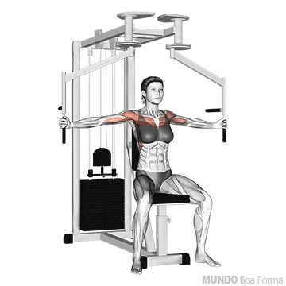

Peito 12 séries (14-12-10-8)

O peito é dividido em 3 partes: superior, medial e inferior
Aciona a parte inferior do peito

crussifixo maquina (medial)

Supino banco reto com barra

Supino inclinado banco 30° com barra reta - pegada aberta (além do ombro)

Pullover com halter banco reto

Ombro 12 séries (12-10-8)

Composto por deltóide anterior, deltóide lateral ou médio e deltóide posterior

Desenvolvimento com barra

Elevação lateral com halteres

Elevação frontal com haltere pegada neutra

Crussifixo invertido no voador
Tríceps 9 séries (12-10-8)
Dividido em 3 porções: cabeça longa, lateral e medial

Barra w com pegada fechada. Trabalha tanto a cabeça lateral como a cabeça longa
Supino barra w com pegada fechada. trabalha a porçao medial do triceps

Polia alta com barra reta ou inclinada.Temos aqui um exercício que trabalha a cabeça lateral do tríceps melhor do que outros movimentos